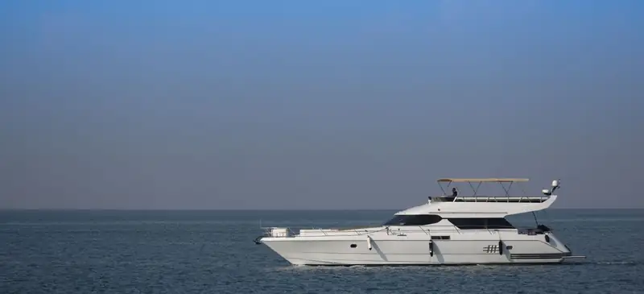
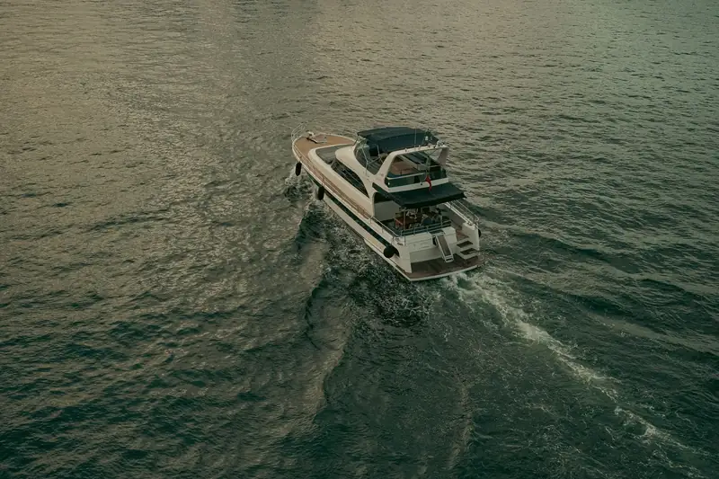
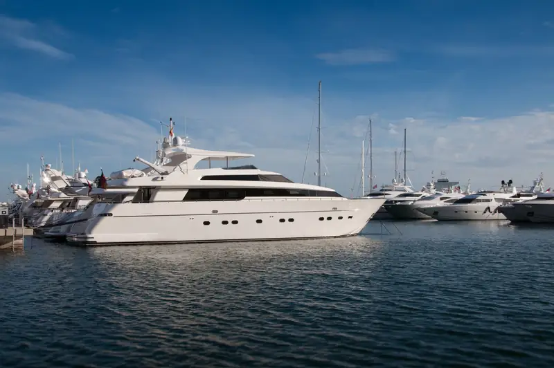
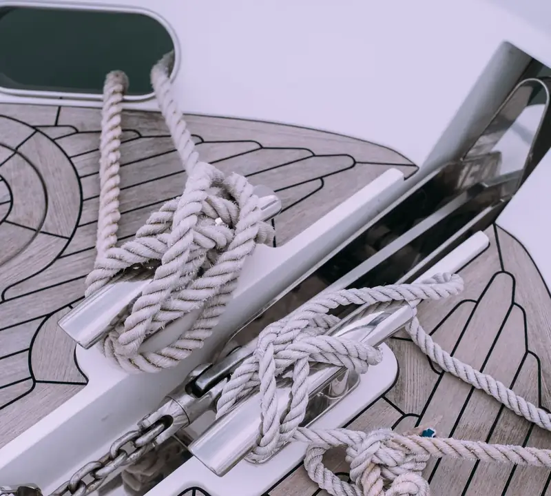
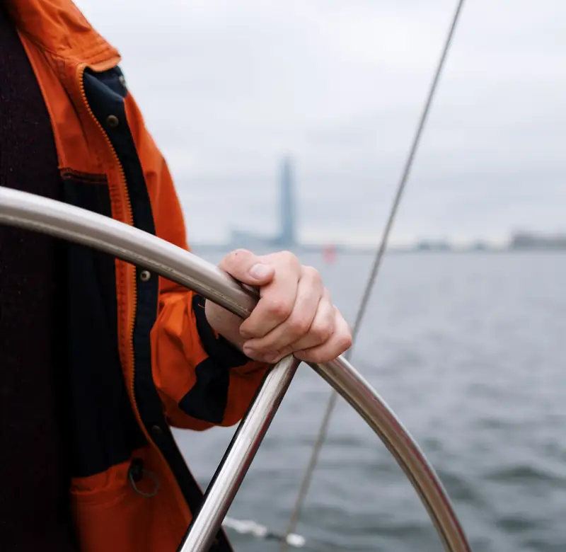
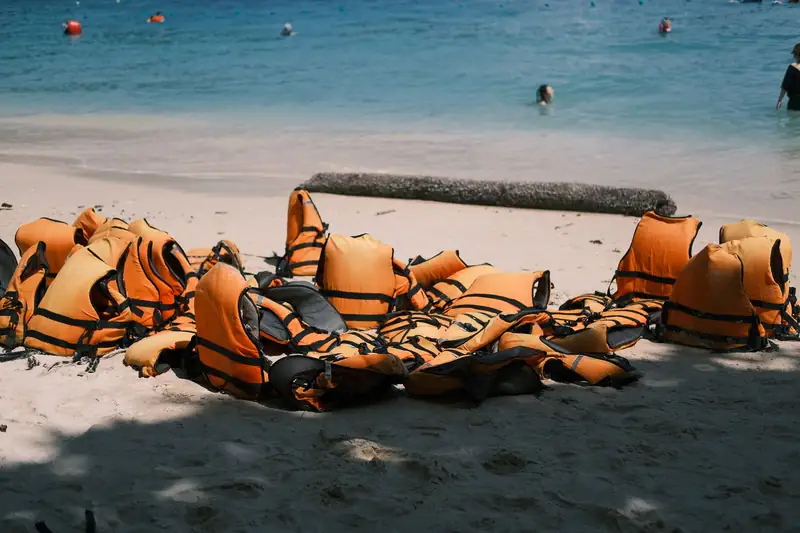
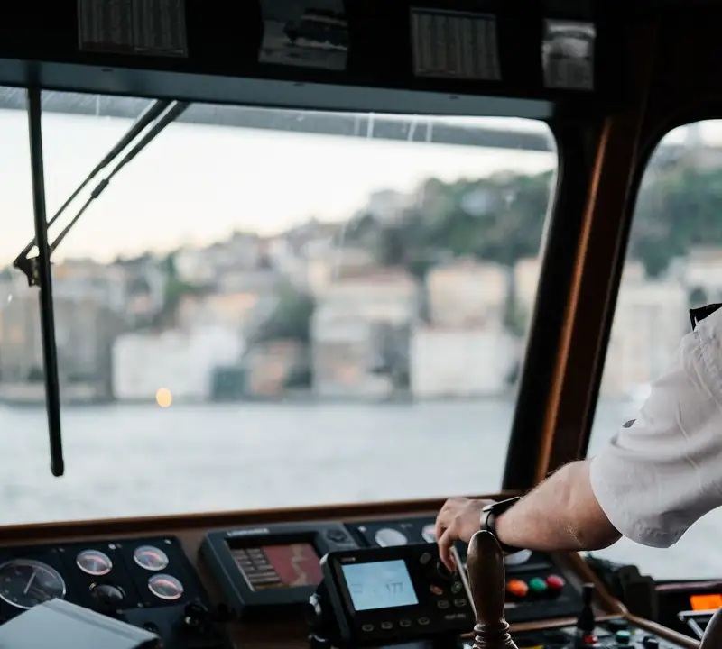
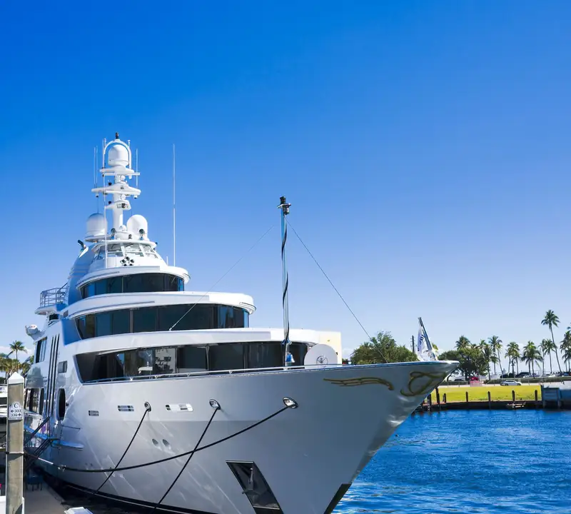

Yacht deliveries · management · training
Your yacht, carried across the water with quiet care.
From the dock you leave to the berth you arrive at, every mile is planned, watched and handled as if the boat were our own.
What we do
One steady hand for every part of ownership.

Yacht Deliveries
Coastal and offshore passages planned around weather, crew and the boat itself.
How a delivery works
Yacht Management
Berths, schedules and paperwork kept in order, so the boat is ready when you are.
Talk about management
Maintenance Coordination
The right trades, booked and overseen, with clear updates while you’re away.
Arrange maintenanceYacht Deliveries page
From dock to destination
Nothing left to chance between here and there.
Survey & plan
The boat, the route and the weather window, agreed with you.
Prepare
Systems, safety gear and provisions checked before departure.
Passage
Regular position and condition updates while under way.
Handover
Arrival report and a walk-through at the new berth.

Private Owner Training page
Private Owner Training
Learn your own boat, on your own boat.
One-to-one time aboard your yacht: docking, handling, systems and safety, at a pace that builds real confidence at the helm.
Wives Save Lives page
Wives Save Lives
If the skipper can’t, you can bring everyone home.
Boating safety education for partners and family aboard: how to take the helm, call for help, and bring the boat safely to a stop.

Maven Academy page
Maven Academy
Boating safety, taught calmly and well.

Safe boat handling
Course Sample content
Docking & lines
Course Sample content
Emergency readiness
Course Sample content

About Us page
About Maven
A US yacht services company built on care at sea.
Deliveries, management, maintenance coordination, owner training and safety education, under one name you can call. Sample content
Contact
Tell us where she is, and where she’s going.
A few details and we’ll come back with a plan and a clear quote.
Request received
Thank you. Your boat is in good hands from here.
We’ll review the route and reply with a plan and a quote. Until then, there is nothing more you need to do.